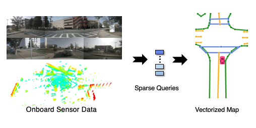

VCAD: Vision-Centric Autonomous Driving
VCAD (Vision-Centric Autonomous Driving) is an open-source research effort that pushes the frontiers of camera-centered autonomous driving technology. Existing autonomous driving technology is heavily relient on LiDAR sensing, however recent advances in AI show the great promise of vision-centered autonomous driving technology. Here are several important reasons to work on VCAD:
 HDMapNet |
BEV Mapping: HDMapNet is an online HD map learning framework, whose goal is replace pre-annotated HD semantic maps. |
 DETR3D |
BEV Detection: DETR3D is a multi-camera 3D object detection framework that does NOT require dense depth prediction or post-processing. |
 FUTR3D |
BEV Fusion: FUTR3D is a unified sensor fusion framework that works with ARBITRARY sensor combinations. |
 MUTR3D |
BEV Tracking: MUTR3D is an end-to-end multi-camera 3D tracking framework that works with arbrtary camera rigs. |
|
 VectorMapNet |
BEV Vectorized Mapping: VectorMapNet is an end-to-end map learning framework that generates vectorized HD map from onboard sensor data. |